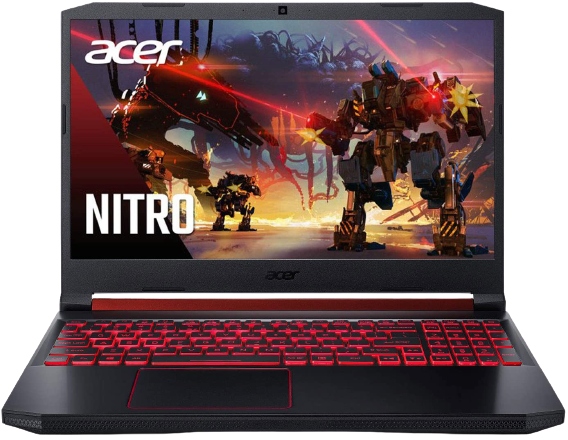

Models
1) Nitro 5 (AN515-55-79CU)
Windows 10 Home
Intel® Core™ i7-10750H processor Hexa-core 2.60 GHz
NVIDIA® GeForce® GTX 1660Ti with 6 GB dedicated memory
39.6 cm (15.6") Full HD (1920 x 1080) 16:9
8 GB, DDR4 SDRAM
512 GB SSD

2) Nitro 5 (AN515-55-52Z1)
Windows 10 Home
Intel® Core™ i5-10300H processor Quad-core 2.50 GHz
NVIDIA® GeForce® GTX 1650Ti with 4 GB dedicated memory>
39.6 cm (15.6") Full HD (1920 x 1080) 16:9
8 GB, DDR4 SDRAM
512 GB SSD
3) Nitro 5 (AN515-44-R1AZ)
Windows 10 Home
AMD Ryzen 7 4800H processor Octa-core 2.90 GHz
NVIDIA® GeForce® GTX 1650 with 4 GB dedicated memory
39.6 cm (15.6") Full HD (1920 x 1080) 16:9
8 GB, DDR4 SDRAM
512 GB SSD